Themed Mux player on journey pages (PR #767, phase 2) Real server-rendered page and real editor preview, same fixture, light and dark schemes, desktop and 390px mobile. Accent, control colours and radius come from the journey theme; PiP, AirPlay and Cast hidden; speeds 1/1.25/1.5/2.
Published page, desktop 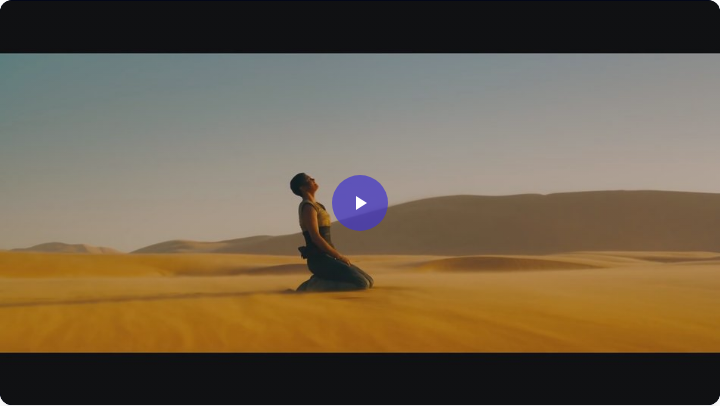
light-desktop-1-before-play.png light-desktop-2-controls.png 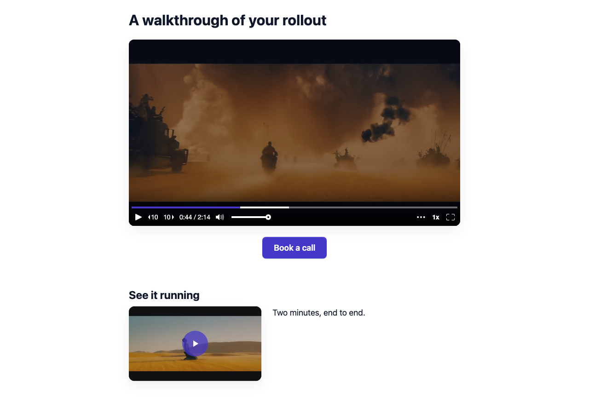
light-desktop-3-page.png 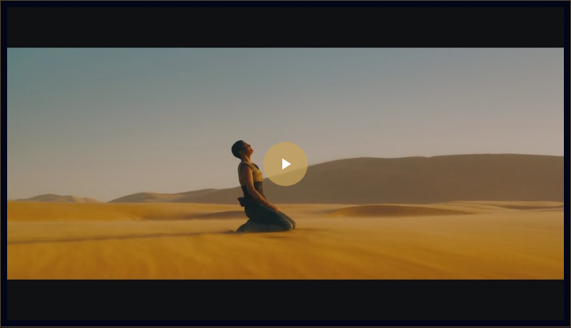
dark-desktop-1-before-play.png 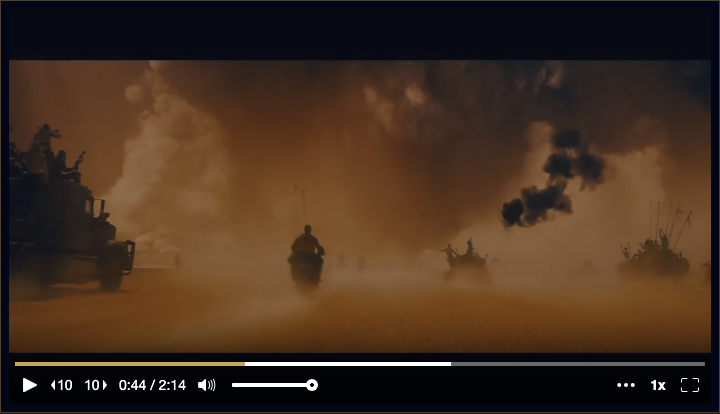
dark-desktop-2-controls.png 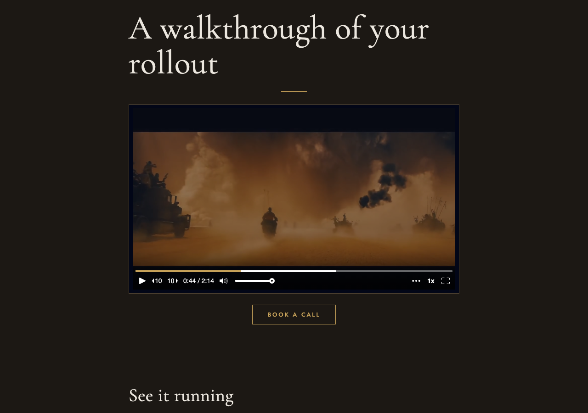
dark-desktop-3-page.png Published page, mobile light-mobile-1-before-play.png 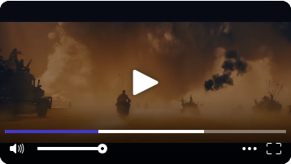
light-mobile-2-controls.png 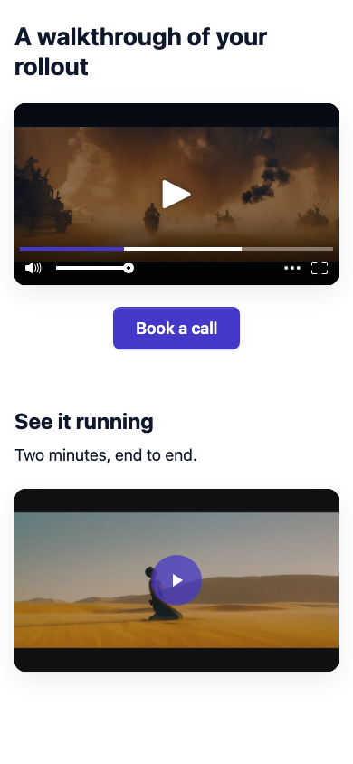
light-mobile-3-page.png 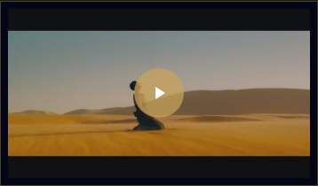
dark-mobile-1-before-play.png 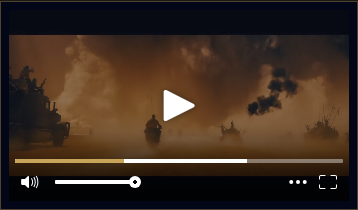
dark-mobile-2-controls.png 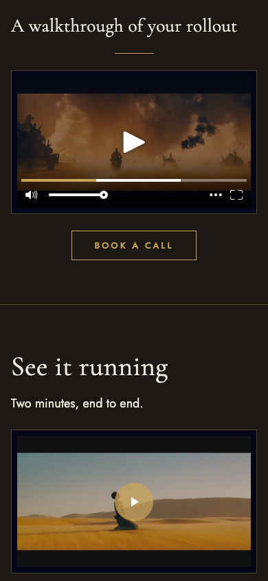
dark-mobile-3-page.png Editor preview 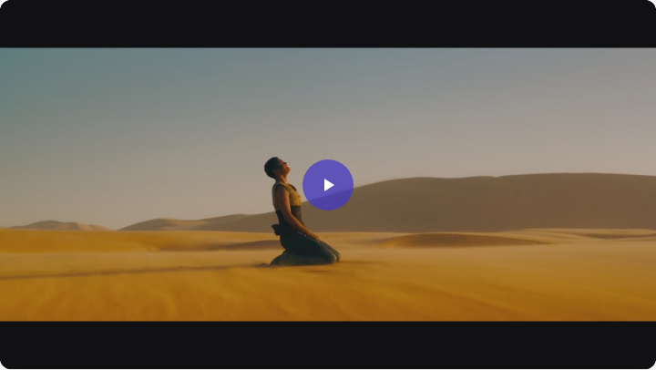
preview-light-desktop-1-before-play.png 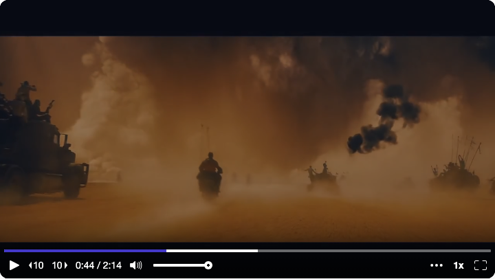
preview-light-desktop-2-controls.png preview-light-desktop-3-page.png preview-dark-desktop-1-before-play.png 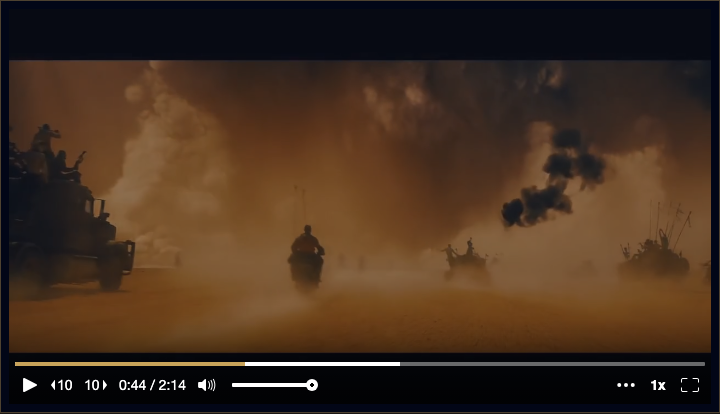
preview-dark-desktop-2-controls.png 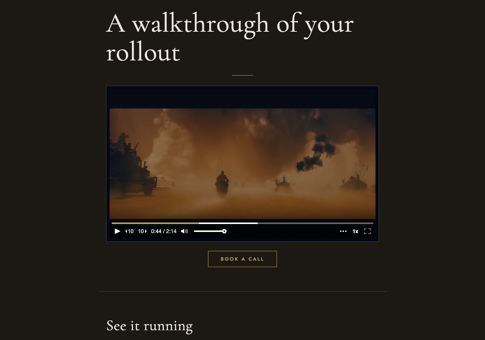
preview-dark-desktop-3-page.png 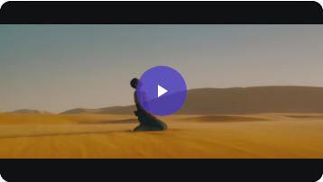
preview-light-mobile-1-before-play.png 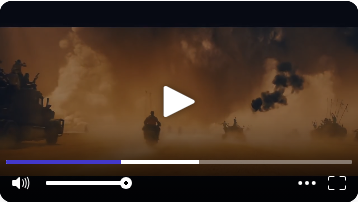
preview-light-mobile-2-controls.png 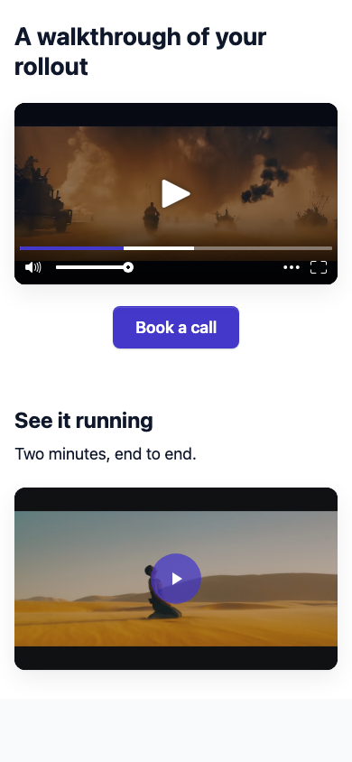
preview-light-mobile-3-page.png